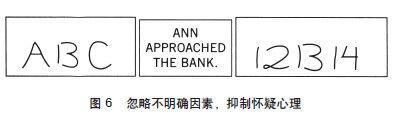

第7章 字母“B”与数字“13”
伟大的喜剧演员丹尼·凯（Danny Kaye）的一句话一直萦绕于我的脑际，从十几岁至今都不曾忘记。谈到一个自己很不喜欢的女人时，他说：“她最得意的姿态是忘乎所以，最喜欢做的事就是仓促下结论。”在我与阿莫斯·特沃斯基开始讨论研究统计性直觉的合理性问题时，这句话就浮现在我的脑海里。现在，我觉得这句话正是对系统1的功能恰如其分的描述。如果结论可能是正确的，偶尔的错误所付出的代价也在可接受的范围内，而且这种仓促的做法可以节省很多时间和精力，那么这种仓促的结论就是高效的。如果对情况不熟悉，在风险又高并且没有时间去搜集更多信息的情况下过早下结论就很冒险。此时，很可能会出现直觉性错误，但这种错误也许可以通过系统2的有意干涉而得以避免。

图6中三个方框的内容有何共同点？答案是，它们全都有歧义。你几乎可以确定地读出左边方框内所呈现的内容是“ABC”，右边是“12 13 14”，但这两个方框的中间那部分内容是一模一样的。你本可以将它们看做是“A13 C”和“12 B 14”的，但你却没有这样做。这是为什么呢？那是因为，同样的形状在字母的环境下就容易被看做是字母，在数字的环境下就容易被看做是数字。完整的环境能帮助你理解其中的每一个因素。那个形状是会引发歧义的，但你过早地对它的“身份”下了结论，并且根本意识不到你已经赋予了某种歧义以解释。
看到中间框的内容，你可能会把安（Ann）想象成一个满脑子都是钱的女人，她正走入一栋有出纳员和地下金库的房子。但这个貌似可信的理解并不是唯一的可能，这个句子同样有歧义。如果在这个句子之前有“他们沿着这条河缓缓地漂向下游”这样一句话，你就会想到一个完全不同的场景。当你一直在想河流的问题时，“bank”（这个单词有“岸边”和“银行”两个意思）这个单词就与钱没什么联系了。在没有清晰情境的情况下，系统1会自行建立一个可能的情境。我们知道这是系统1判断的结果，因为你并没有意识到自己作了选择，也没有意识到还可能有别的解释。除非你最近一直在乘独木舟，否则你去银行所用的时间肯定要比在河里漂流的时间多，所以你才会根据最近所经历的事化解了“bank”一词的误解。当我们对答案不确定时，系统1就根据过往经历去赌一个答案。这种下赌的规则是明智的：最近发生的事及当前情境是作抉择时最重要的因素。如果脑中没有闪现出任何最近发生的事，那更为遥远的记忆便会呈现出来。你最早、记忆最为深刻的经历一定是唱英文字母歌，这首歌的开头一定是“ABC”，而不是“A13 C”。
在这两个例子中最为关键的一点是：你作了一个确切的选择，但自己却没有意识到自己这样做了。你的脑海中出现的只有一种解释，而且你从未意识到这些问题会有歧义。系统1不会记得自己放弃的几个选项，甚至都不记得曾有过多种选择。有意识的怀疑需要同时在脑中记住多种互不相容的解释，需要付出努力，而这并不是系统1的长项。易变和怀疑是系统2的职责范围。